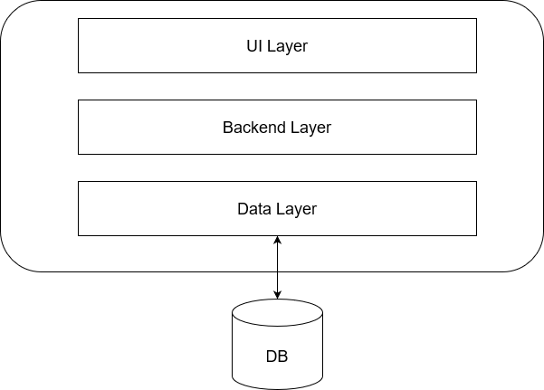
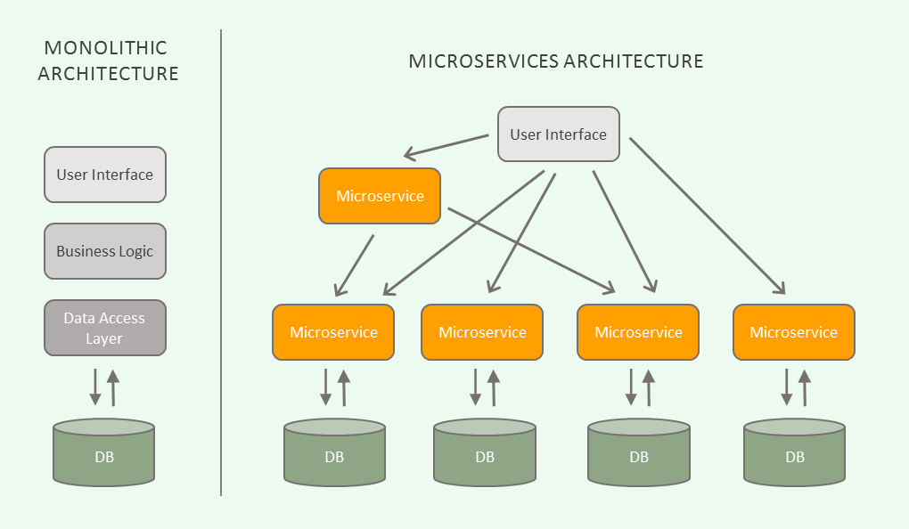

class: inverse, center, middle # Microservice alapok --- ## Bemutatkozás * Gellai Gábor * 2016 óta Telcotrend * DXC (Telekom) csapat * Jazz, Biller, POM DPS --- ## Telekom DPS * Deutsche Telekom kezdeményezés * DPS: Digital Platform Service * Microservice halmaz * Legkisebb üzleti egység * Stack: Kotlin/Java 11, Spring Boot, OpenAPI, Gradle, Kafka, ELK, Docker, Kubernetes, Grafana (Prometheus), Gitlab CI/CD, Helm chart --- class: inverse, center ## DPS architektúra <img src="images/DPS.png" alt="drawing" width="550"/> --- class: inverse, center, middle # Monolith vs Microservice --- class: inverse, center ## Monolith architektúra  --- ## Monolith architektúra előnyök: * egyszerű fejlesztés: egy kódbázis * egyszerű deploy: egy alkalmazás, egyszerű a ci/cd pipeline * egyszerű skálázni: több példányban indítjuk az alkalmazást hátrányok: * idővel túl nagy lesz, nehezebb karbantartani/átlátni, lelassul a fejlesztés * egyúttal nő a csapat mérete is * lassul az alkalmazás build/deploy/run ideje * skálázás költséges * alacsony hibatűrés: meghibásodás esetén a teljes alkalmazás leállhat * tech stack nehezen cserélhető --- class: inverse, center ## Microservice architektúra  --- ## Microservice architektúra előnyök: * egymástól független kis alkalmazások: * könnyebb karbantartani * átláthatóbb a kód, gyorsabb a fejlesztés * külön deployolhatók * csapatok jobban szervezhetőek: több kisebb csapat, egymástól függetlenül dolgoznak, csapatonként egy-több microservice * kisebb alkalmazásokra gyorsabb a build/deploy/run * nagyobb hibatűrés: egy microservice meghibásodása esetén a többi service egészséges marad * tech stack rugalmasság: a független service-k könnyebben cserélhetőek hátrányok: * rendszer komplexitása nő * service kommunikációk összehangolása, hibakezelés * service-k közötti interakciók tesztelése * fejlesztő csapatok koordinációja (szervezeti átalakítás, Conway's Law) --- ## Microservice tulajdonságok TODO * Event-driven communication (async) ahol csak lehet * Data consistency * Stateless * DDD: Domain driven design * TDD: Test driven development * SOLID * Twelve-Factor --- ## Twelve-Factor app TODO * egy [metodológia](https://12factor.net/) felhőbe (PaaS) telepíthető alkalmazások fejlesztésére * Platform as a Service (pl.: AWS, Azure, OpenShift, PCF, Google Cloud, stb.) --- ## Twelve-Factor app ajánlások TODO * Verziókezelés: "One codebase tracked in revision control, many deploys" * Függőségek: "Explicitly declare and isolate dependencies" * Konfiguráció: "Store config in the environment" * Háttérszolgáltatások: "Treat backing services as attached resources" * Build, release, futtatás: "Strictly separate build and run stages" * Folyamatok: "Execute the app as one or more stateless processes" * Port hozzárendelés: "Export services via port binding" * Párhuzamosság: "Scale out via the process model" * Disposability: "Maximize robustness with fast startup and graceful shutdown" * Éles és fejlesztői környezet hasonlósága: "Keep development, staging, and production as similar as possible" * Naplózás: "Treat logs as event streams" * Felügyeleti folyamatok: "Run admin/management tasks as one-off processes" --- ## Monolith refaktorálása Microservice architektúrába TODO https://microservices.io/refactoring/ --- ## Linkek https://12factor.net/ https://microservices.io/